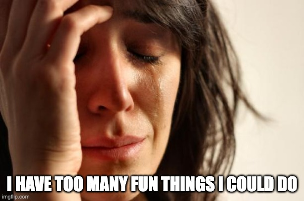

ELOISE LIKES WRITING: ON BEING BUSY
A bad feeling I sometimes have is that I'm busy and rushed and can't fit everything I want to do into my time. There are too many books I want to read, and too many people I want to see, and too many projects I want to do. The chronic insufficiency of my time is a source of frustration.
However, I can imagine a world where there are twice as many great books to read, and people are twice as awesome, and I have twice as many good project ideas. This world is clearly better.
And I can imagine a world where I never feel the rushed feeling because things are just worse. I don't have too many books to read because there aren't many good books. No one around me is interesting enough to more-than-fill the time I have available. I don't have many ideas for projects I want to do. This world is clearly worse.
The rushed feeling I experience is a symptom of limited time, but it's also a symptom of being surrounded by a wealth of good opportunities.
 back{kind=link}